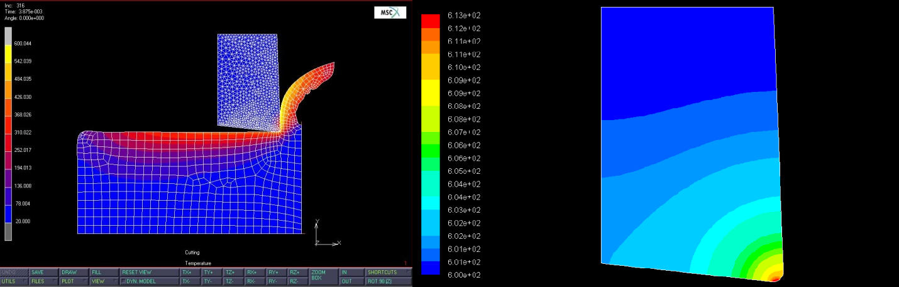

Research Projects
Robotics
Prediction-Based Obstacle-Avoidance Control of Baxter with Input Delay (Oct. 2017 - present)
UC San Diego & San Diego State UniversityDesign and Implement Adaptive Control for 7-DOF Baxter's Arm for Obstacle Avoidance (2017)
UC San Diego & San Diego State UniversityTrajectory Optimization of 7-DOF Baxter's Arm Using Extremum Seeking, GA and GS Methods (2016)
UC San Diego & San Diego State UniversityWhole-body Adaptive Locomotion and Manipulation (2014)
European Community's 7th Framework Program Walk-Man (FP7-ICT-611832-2013)
Italian Institute of Technology (IIT), Genoa, Italy
Walk-Man: Humanoid Robot for Rescue Missions
Dynamic Modeling & Control
Networked-Based Optimization and Control of Smart Valves (May 2015 - Jan. 2016)
Dynamic Systems and Control Laboratory, SDSUOutput-Feedback Control Design for a MIMO Model of a 2-DOF Helicopter (Spring 2016)
Robust and Multivariable Control (Course Project), UC San DiegoClassical, LQR, LQG, and H∞ State-Feedback control design for linear model of a SISO system (Winter 2015)
Linear Control Design (Course Project), UC San DiegoModeling, Design and Optimization of the Suspension System of a Ten-wheeled Vehicle (2013)
Iran Khodro Research Center, Tehran, IranInvestigation of Different Methods of Controlling Underactuated Mechanical Systems (2012)
Nonlinear control systems course, Amirkabir University of Technology (Tehran Polytechnic)Design of a Micro-Satellite Attitude Controller via Tracking Error Minimization (2011)
Energy and Control Center of Excellence, Amirkabir University of Technology (Tehran Polytechnic)Simulation and Singularity Analysis of a Control Moment Gyroscope (CMG) (2010)
System Dynamics and Control Research Laboratory, Amirkabir University of Technology (Tehran Polytechnic)Adaptive Control of the Double Inverted Pendulum (2012)
Nonlinear control systems course, Amirkabir University of Technology (Tehran Polytechnic)Control Design for Rotary Flexible links Using Classic, Modern and Optimal Methods and Evaluation with Experimental Results (2012)
Nonlinear control systems course, Amirkabir University of Technology (Tehran Polytechnic)
Finite Element (Heat Transfer)
3D Modeling and Analysis of Tool-Chip Interface Temperature using FEM and Empirical verification (2010)
Chemical Engineering Department, Amirkabir University of Technology (Tehran Polytechnic)Analysis the Effect of Cutting Parammeters on Tool-Chip Interface Tempreture (2010)
Chemical Engineering Department, Amirkabir University of Technology (Tehran Polytechnic)

Chip Formation Process and Temperature Distribution
Others
Design and Manufacturing of a Three-axial Attitude Simulator (2010)
System Dynamics and Control Research Laboratory, Mechanical Engineering Department, Amirkabir University of Technology (Tehran Polytechnic)Control of Canned Filling and Packing Line with PLC (2009)
Mechatronics course, Amirkabir University of Technology (Tehran Polytechnic)
Publications
Journals
M. Bagheri, M. Krstić, and P. Naseradinmousavi, "Multivariable Extremum Seeking for Joint-Space Trajectory Optimization of a High-Degrees-of-Freedom Robot", ASME Journal of Dynamic Systems, Measurement and Control, Vol. 140, Issue 11, pp. 111017-111017-13, 2018.
P. Naseradinmousavi, H. Ashrafiuon, and M. Bagheri, "A Decentralized Neuro-Adaptive Control Scheme to Suppress Chaotic/Hyperchaotic Dynamics of Smart Valves Network", ASME Journal of Computational and Nonlinear Dynamics, Vol. 13, Issue 5, pp. 051008, 2018.
M. Bagheri, P. Naseradinmousavi, "Novel analytical and experimental trajectory optimization of a 7-DOF baxter robot: global design sensitivity and step size analyses", The International Journal of Adv. Manufacturing Tech. , Vol. 27, Issue 9, pp. 1-15, 2017.
I. Kardan, M. Kabganian, R. Abiri, M. Bagheri, "Stick-Slip Conditions in the General Motion of a Planar Rigid Body", Journal of Mechanical Science and Technology, Springer, Vol. 27, Issue 9, pp. 2577-2583, 2013.
M. Bagheri, M. Kabganian, R. Nadafi, "Three-axis Attitude Control Design for a Spacecraft Based on Lyapunov Stability Criteria", Scientia Iranica, Transaction B: Mechanical Engineering, Vol. 20, Issue 4, pp. 1302-1309, 2013.
A. Fata, M. Bagheri, P. Mottaghizadeh, "Tool Temperature Prediction during Machining by FEM with Experimental Validation", Journal of Basic and Applied Sci. Res., 2(12), pp. 12606-12610, 2012.
M. Bagheri, P. Mottaghizadeh, " Analysis of Tool-Chip Interface Temperature with FEM and Empirical Verification", International Journal of Mechanical and Mechatronics Engineering, Vol. 6, No. 8, pp. 1766-1775, 2012.
P. Mottaghizadeh, M. Bagheri, " 3D Modeling of Temperature by Finite Element in Machining With Experimental Authorization", International Journal of Mechanical and Mechatronics Engineering, Vol. 6, No. 8, pp. 1646-1652, 2012.
Conference papers
M. Bagheri, M. Krstić, and P. Naseradinmousavi, "Analytical and Experimental Predictor-Based Time Delay Control of Baxter Robot", ASME Dynamic Systems and Control Conference (DSCC 2018), Accepted to be Presented, Sept. 30 - Oct. 3, Atlanta, GA, USA, 2018.
M. Bagheri, M. Krstić, and P. Naseradinmousavi, "Joint-Space Trajectory Optimization of a 7-DOF Baxter Using Multivariable Extremum Seeking", IEEE American Control Conference (ACC 2018), pp. 2176-2181, June 27-29, Milwaukee, WI, USA, 2018.
P. Naseradinmousavi, H. Ashrafiuon, and M. Bagheri, "Suppressing Chaotic and Hyperchaotic Dynamics of Smart Valves Network Using A Centralized Adaptive Approach", IEEE American Control Conference (ACC 2018), pp. 1671-1676, June 27-29, Milwaukee, WI, USA, 2018.
M. Bagheri, P. Naseradinmousavi, and R. Morsi, "Experimental and Novel Analytical Trajectory Optimization of a 7-DOF Baxter Robot: Global Design Sensitivity and Step Size Analyses", ASME Dynamic Systems and Control Conference (DSCC 2017), Tysons, USA, 2017.
M. Bagheri, P. Naseradinmousavi, H. Ashrafiuon, M. Canova, and D. B. Segala "Suppressing Chaotic/Hyperchaotic Dynamics of Smart Valves Network Using Decentralized and Centralized Schemes", ASME Dynamic Systems and Control Conference (DSCC 2017), Tysons, USA, 2017.
P. Naseradinmousavi, M. Bagheri, M. Krstić, and C. Nataraj, "Coupled Chaotic and Hyperchaotic Dynamics of Actuated Butterfly Valves Operating in Series", ASME Dynamic Systems and Control Conference (DSCC 2016), pp. V002T17A001, Minneapolis, USA, 2016.
P. Naseradinmousavi, M. Bagheri, and C. Nataraj, "Coupled Operational Optimization of Smart Valve System Subject to Different Approach Angles of A Pipe Contraction", ASME Dynamic Systems and Control Conference (DSCC 2016), pp. V001T02A001, Minneapolis, USA, 2016.
M. Bagheri, A. Ajoudani, J. Lee, D. Caldwell, N. Tsagarakis, "Kinematic Analysis and Design Considerations for Optimal Base Frame Arrangement of Humanoid Shoulders", IEEE International Conf. on Robotics and Automation (ICRA 2015), pp. 2710-2715, Seattle, USA, 2015.
M. Bagheri, M. Kabganian, R. Nadafi, "Stable Design of Attitude Control for A Spacecraft", IAA Conference on Dynamics and Control of Space System (DyCoSS), Advances in the Astronautical Sciences, Vol. 145, pp. 777-788, March 19-21, Porto, Portugal, 2012.
M. Kabganian, R. Nadafi, Y. Tamhidi, M. Bagheri, "A Novel Mechanical Attitude Simulator with Adaptive Control for Micro-Satellite", IEEE International Conference on Control, Instrumentation, and Automation (ICCIA 2011), pp. 694-698, December 27-29, Shiraz, Iran, 2011.